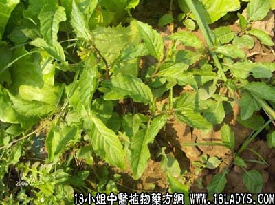

古籍名：蔊菜《本草纲目》。
别名：鸡肉菜、野葛菜、田葛菜。
植物名：蔊菜。
生长环境：本品为一年生草本。性喜肥沃湿润土壤，多生于田野间。
分布：广东及我国南方各地均有分布。
入药部分：全草。
采集期：全年，以春、夏为多。
自采地点：塘边荒地。
性味：性凉、味甘淡。
功能：清热、去骨火。
主治、用量和用法：湿火骨痛：生塘葛菜1斤、生鱼一条（开肚），清水十碗，煎成二碗作汤饮。生鱼佐膳。
验方：（治湿火骨痛方）生塘葛菜半斤、生葛4两、枸杞头4两、生茅根4两、石螺1斤（原个用）、清水8碗，煎成二碗，分二次服。
（方解）本方塘葛菜甘凉清热；枸杞头、生茅根退骨火，伏热；生葛、石螺去湿火。郁火既清，湿火消除，胃痛自止。
（方歌）湿火骨痛势难休，生塘葛菜枸杞头，石螺茅根兼生葛，郁火伏热痛即收。
参考资料：《广州常用草药验方集解》治发热气经验方：塘葛菜、海金沙、火炭母、狗肝菜、岗梅根、生用每味一两至两半，或干用每味五钱、用水三碗，煎成一碗，作一次服。视自觉症状可适当连服数日。
（方解）一般所谓发热气，可包括口干舌燥，鼻气腥热，胸翳、头刺、干咳、便秘、尿黄短、身骨痛、发梦频扰等。本方用岗美根清咽生津；狗肝菜清肝胃热；火炭母清大肠湿热、解毒；海金沙利水去湿；塘葛菜去骨火浮火。构成平稳清凉方剂，可防治一般轻热病。
（方歌）热气清凉有验方，岗美金沙用力帮，加入狗肝塘葛菜，火炭母来共作汤。
本文解释权归中药大全，本文地址：https://www.daquan.com/post/1624.html